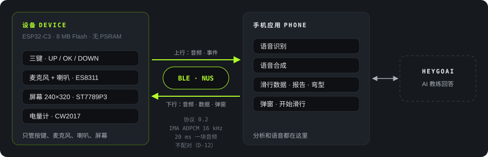
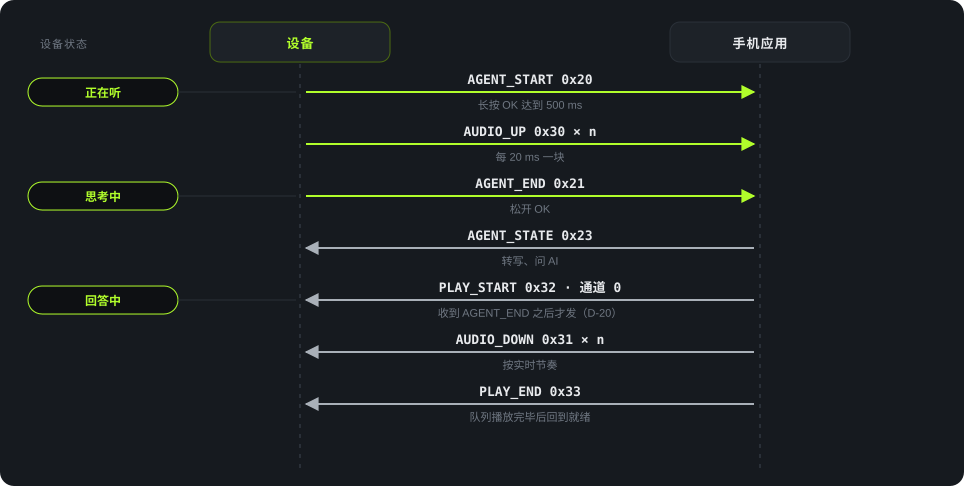

简体中文 · English
Architecture
架构与协议
分工
设备负责按键、录音、播放和显示。手机负责语音识别、语音合成、滑行数据和 AI 教练。控制消息和音频均通过 BLE 传输，应用不使用 Wi-Fi。

| 项 | 值 |
|---|---|
| 主控 | ESP32-C3，8 MiB Flash，无 PSRAM |
| 屏幕 | ST7789P3，240 × 320，SPI2 |
| 按键 | UP、DOWN、OK 共用 GPIO0，ADC 分压 |
| 音频 | ES8311，I2S 全双工 |
| 电量计 | CW2017 |
| 软件 | ESP-IDF 5.5.3，LVGL 9.5.0，NimBLE |
| 音频编码 | IMA ADPCM，16 kHz，20 ms 分块。协议定义了裸 PCM，但本版固件只支持 ADPCM |
| BLE 安全 | 不加密、不配对 |
一次提问的消息流

手机必须收到 AGENT_END 后才能发送 PLAY_START。CAPTURE 状态没有转入播放的路径，提前发送的 PLAY_START 不会打断录音。
协议 0.2 的消息
D 表示设备，P 表示手机。
| 组 | 消息 | 方向 | 用途 |
|---|---|---|---|
| 链路 | HELLO 0x01 · HELLO_ACK 0x02 | D↔P | 握手，交换版本、编码和 MTU |
| PHONE_STATUS 0x03 · DEVICE_STATUS 0x04 | 双向 | 网络、电量、页面和空闲堆 | |
| ERROR 0x0F | 双向 | 报告被拒绝的数据包 | |
| 上下文 | CONTEXT 0x10 | D→P | 页面变化 |
| 教练 | AGENT_START 0x20 · AGENT_END 0x21 · AGENT_CANCEL 0x22 | D→P | 一次提问的开始、结束和取消 |
| AGENT_STATE 0x23 | P→D | 思考中、失败等会话状态 | |
| 音频 | AUDIO_UP 0x30 | D→P | 录音块 |
| AUDIO_DOWN 0x31 · PLAY_START 0x32 · PLAY_END 0x33 | P→D | 播放。通道 0 为教练，通道 2 为弹窗 | |
| 滑行 | LIVE_STATS 0x60 · RUN_REPORT 0x61 · RUN_START 0x68 | P→D | 实时数据、报告和开始滑行 |
| SHOW_PAGE 0x62 | P→D | 请求显示报告页 | |
| 弯型 | TURN_SHAPE 0x63 · TURN_GROUP 0x64 | P→D | 弯型摘要和分组 |
| TURN_REQUEST 0x65 | D→P | 请求缺失的分组 | |
| 弹窗 | POPUP 0x66 | P→D | 打开弹窗 |
| POPUP_END 0x67 | D→P | 报告弹窗关闭原因 |
协议还定义了队伍对讲消息 0x50–0x55 和 PLAY_STOP 0x34。队伍对讲属于 P1，不在本次交付范围内。